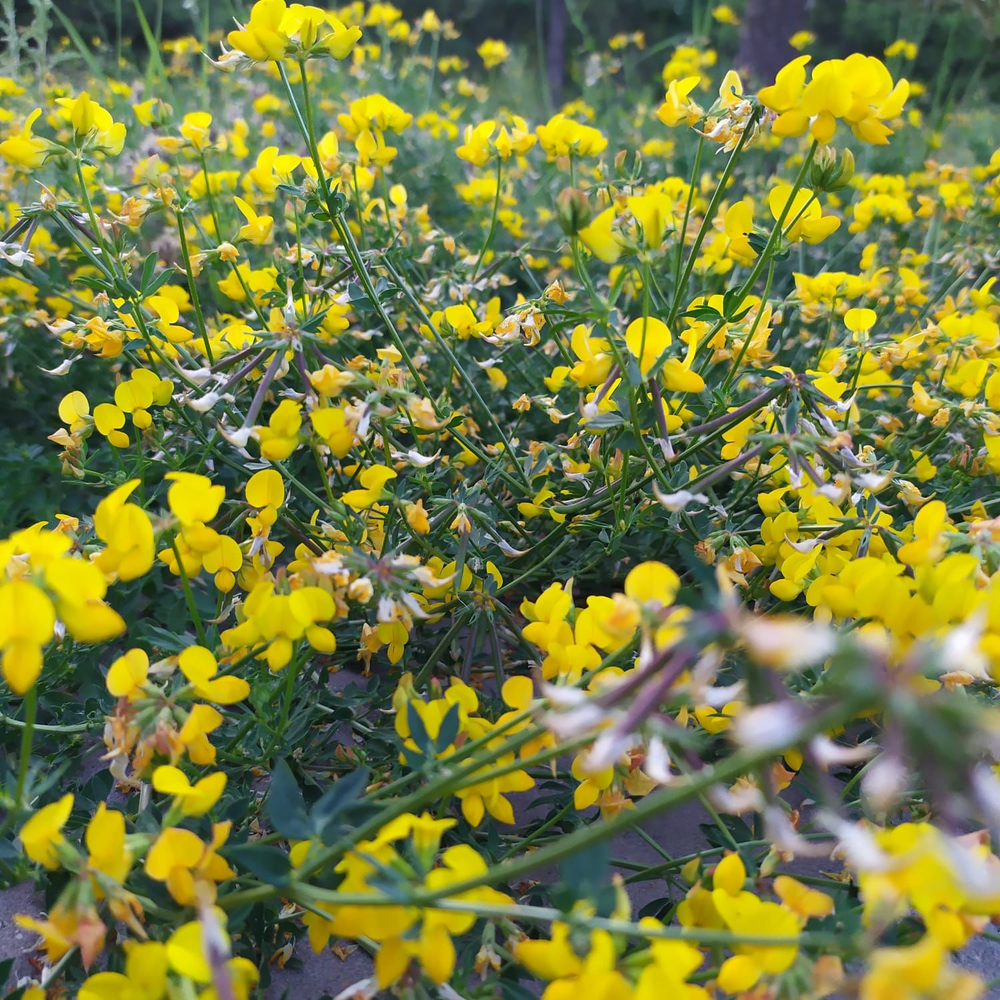

Ареал дикорастущего лядвенца рогатого лежит в Евразии от Атлантического побережья Европы до Центральной Азии и от Субарктики до Малой Азии и Индии. Растение занесено в Америку и Австралию. В Советском Союзе встречается в европейской части, на Кавказе, в Казахстане, горной Туркмении, приурочен в основном к лесной и степной зонам. В Сибири, Казахстане и Средней Азии распространен близкий вид — лядвенец густо-облиственный.
В качестве кормовой культуры лядвенец рогатый используется на сено, зеленый корм или пастбища. Ценится как высококачественный зеленый корм, богатый углеводами и как самая долговечная культура для лугов на всех почвах. Сено по питательной ценности превосходит сено клевера, по качеству — уступает. Содержание белка в сухой массе достигает 22%. Может использоваться как альтернатива люцерне на бедных почвах. В фазе цветения скотом не поедается из-за содержащегося в цветках горького красящего вещества. В не цветущем со¬стоянии поедается всеми видами сельскохозяйственных животных.
Лядвенец рогатый – травянистое многолетнее растение с яркими, золотисто-желтыми цветками. В народной медицине трава лядвенца рогатого служит лекарственным сырьем, обладающим ранозаживляющим, седативным, болеутоляющим, общеукрепляющим и тонизирующим действием.
